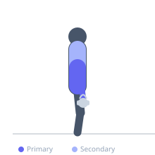
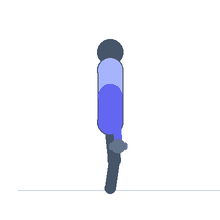

Exercise guide / Suitcase Carry
Suitcase Carry
The suitcase carry is a unilateral loaded carry exercise in which the athlete holds a heavy implement in one hand only and walks while actively resisting the lateral lean that the asymmetric load creates. By requiring the obliques and quadratus lumborum on the opposite side to work isometrically against lateral flexion, it develops anti-lateral flexion core strength that transfers directly to real-world carrying tasks and athletic movements. The challenge is significantly greater than a bilateral farmer's carry due to the asymmetric demand.
Primary muscles
internal oblique
external oblique
flexor carpi radialis
Secondary muscles
trapezius upper
erector spinae
transverse abdominis
Stabilizers
gluteus medius
tensor fasciae latae
Equipment
Dumbbell (Fixed)
Optional
Kettlebell


Starting position
- Stand with a dumbbell or kettlebell held in one hand at your side. Spine tall and neutral, shoulders level.
Setup
- Pick up the implement with a hip-hinge. Stand and brace the core before initiating the walk.
Steps
- Step 1: Pick up the implement in one hand and stand tall.
- Step 2: Brace the core and actively keep both shoulders level — resist the urge to lean toward the loaded side.
- Step 3: Walk forward at a deliberate pace with short, controlled steps.
- Step 4: Maintain a vertical torso throughout — the loaded side should not lower toward the ground.
- Step 5: At the end of the distance, set down the implement, rest, and switch sides.
Coaching cues
- Shoulders stay level — imagine a tray balanced across both shoulders
- Carry it like a suitcase, not a leaning tower
- Squeeze your core like a corset on the opposite side
Breathing
- Breathe continuously with a moderate brace. Exhale every few steps if needed.
Range of motion
- Walk 20–40 meters per side, or for 30–45 seconds per side.
Tempo
- Controlled walking pace. Prioritize upright posture over walking speed.
Common mistakes
- Leaning toward the loaded side — this is exactly what the exercise is meant to prevent
- Shrugging the loaded shoulder upward
- Taking overly wide steps that promote excessive trunk sway
Safety
- Equal sets and distance must be performed on each side.
- Pick up and set down with a proper hip hinge.
Training
- strength: 1–1 reps
- endurance: 1–1 reps
- strength: 2–4 sets
- endurance: 3–4 sets
- Rest: {'strength': 120, 'endurance': 90}